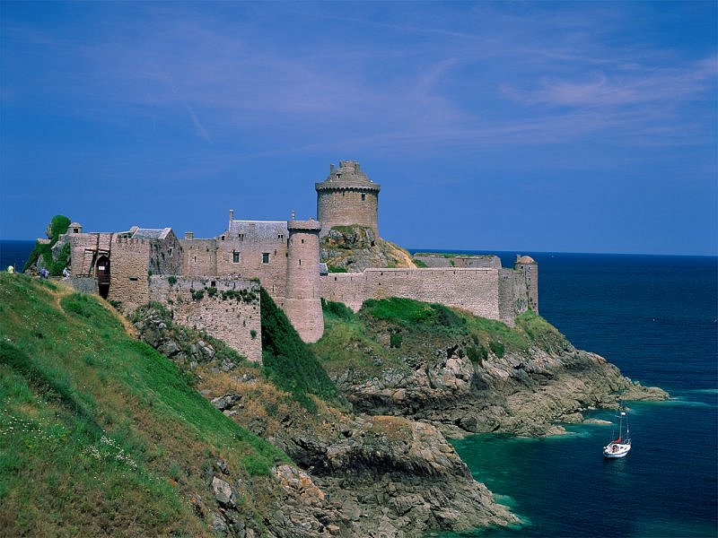

נופש מעל הרקיע
נופש עם כוכבים | 0504154191
דף הבית
טיולים מאורגנים
טיולים בעולם
טיולים באתרים ניבחרים
לונה פארק
טיסות לחו"ל
סיכום הזמנה ותשלום
טיולים מאורגנים
טיולים באתרים ניבחרים
לונדון
פריז
הולנד
שוויץ
פריז
וונציה
איטליה
סין

טורקיה